速览
一般来说，人读画面上的文字和字幕相当快。玩游戏时，能「唰唰」推进文字很舒服——樱井顺便演示了他自己玩游戏时读文字的速度：有点快，但能看懂在讲什么。然而精细演出的过场，就没法按自己想要的速度推进；可以说就像翻书和看电影的差别。作为玩家的个人意见：希望这样的场景也能尽量快进。有些游戏能逐句跳过台词，基本上就是直接快进到下一句开头，他很感激，真的很爽快。他推荐把游戏的文字和台词做成相当容易快速推进的样子；或者做成边玩边听对话。订阅服务、YouTube 之类，能看的影像内容无穷无尽，有的服务还能倍速播放，很多人一定在用。当然你希望玩家放慢速度，品味你打磨的演出和舞台调度；但大家都想用尽量少的时间享受尽量多的东西，甚至可以说已成为现代文化的一部分。只要游戏系统支持这一点，慢慢看还是快速看就交给玩家选择。所以尽量让台词能跳过，也许能让大量玩家开心。另外他注意到海外作品多默认关闭字幕，所以这一观念在海外可能理解不同；但他想借这个机会提个问，多少提高一些意识：推进缓慢的场景，在今天真的合适吗？
1. 人读字很快 0:05
一般来说，人读画面文字和字幕相当快。玩游戏时，能把文字「唰唰」推进下去很舒服。
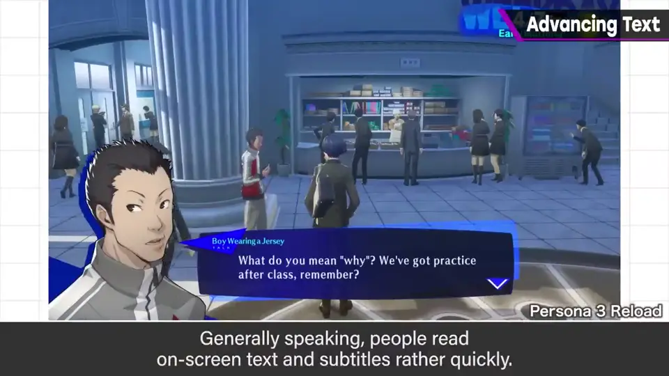
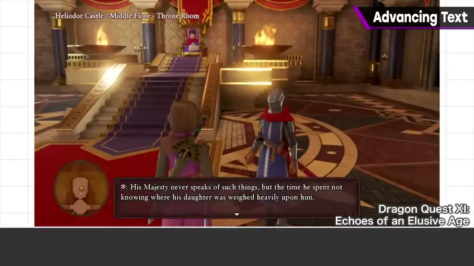
顺便演示：这大概就是樱井自己玩游戏时读文字的速度。有点快，但能看懂在讲什么。
2. 过场的难处 0:42
但对于演出精细的过场，就没法按自己想要的速度推进。
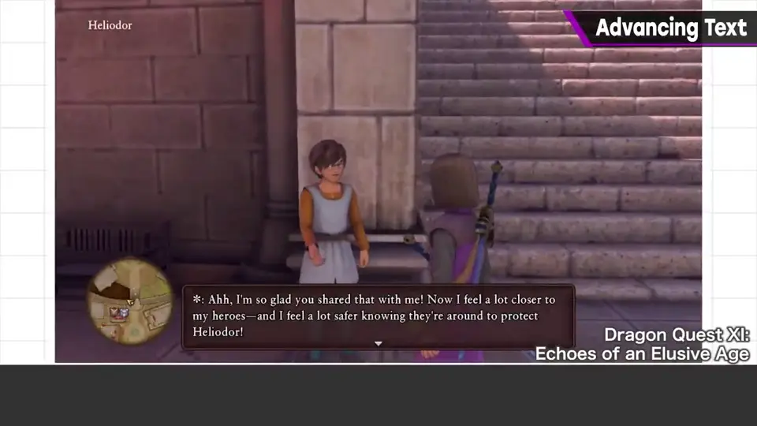
作为玩家的个人意见：希望这样的场景能尽量快进。
3. 逐句跳过与边玩边听 1:03
有些游戏能逐句跳过台词——基本上就是快进到下一句的开头。他很感激，非常爽快。
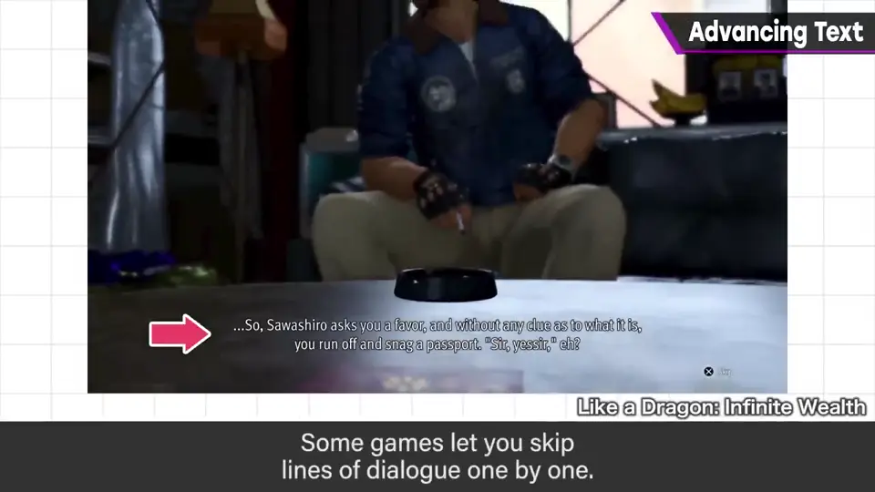
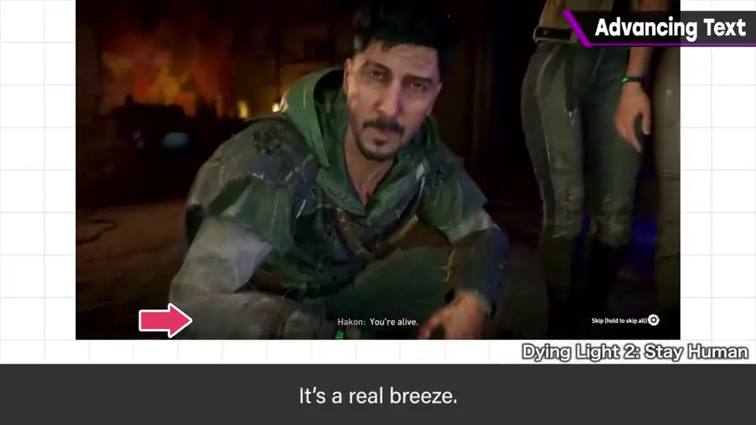
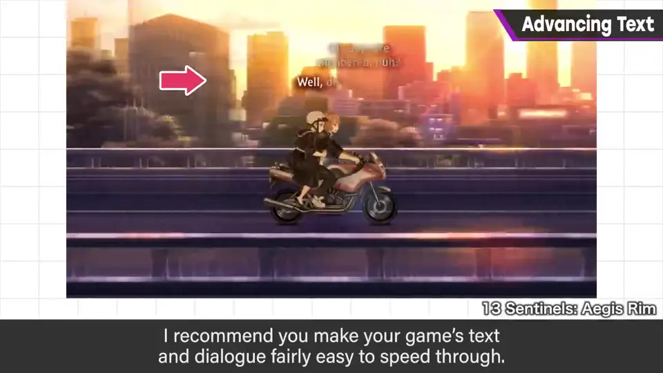
或者，让玩家可以边玩边听对话。
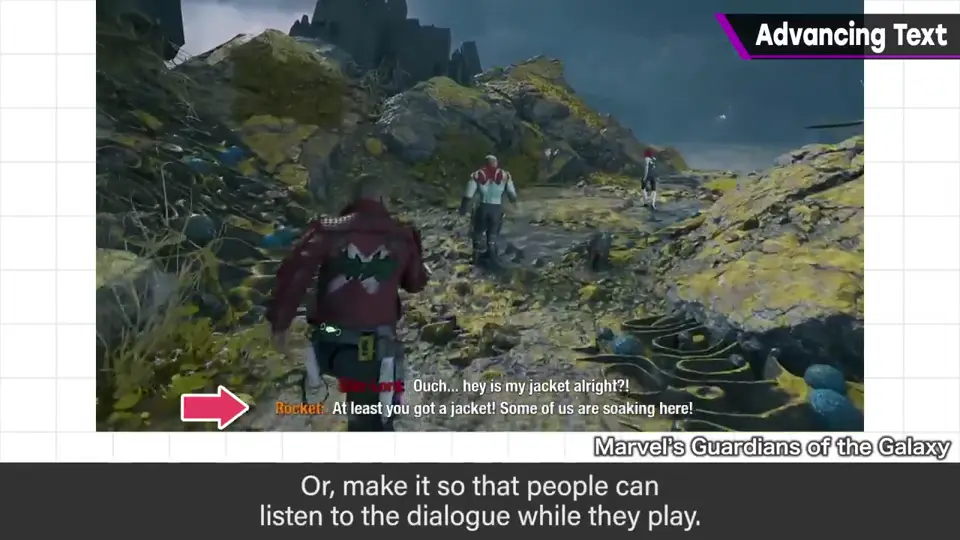
4. 现代的观看文化 1:39
订阅服务、YouTube……能看的影像无穷无尽，有的还能倍速播放，很多人一定在用。
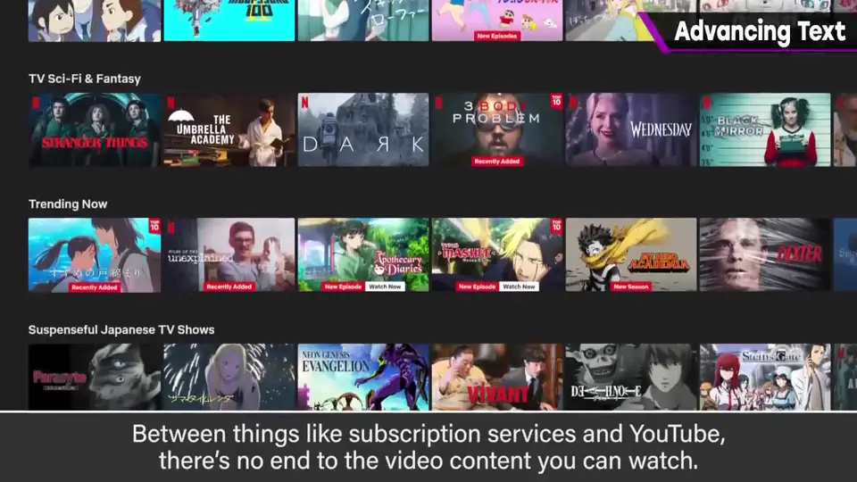
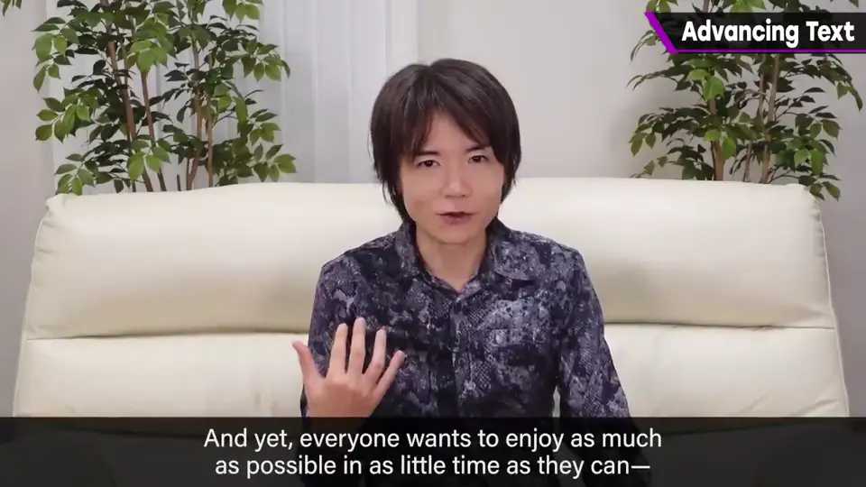
你当然希望玩家放慢速度、品味你打磨的演出与舞台调度。但大家都想用尽量少的时间享受尽量多的东西——这甚至已是现代文化的一部分。
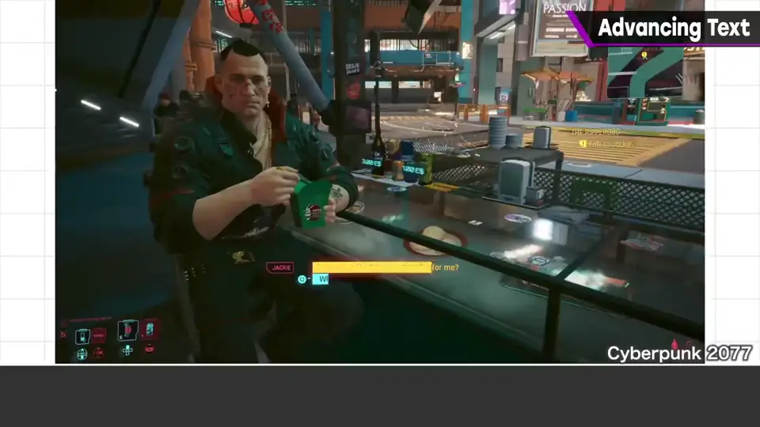
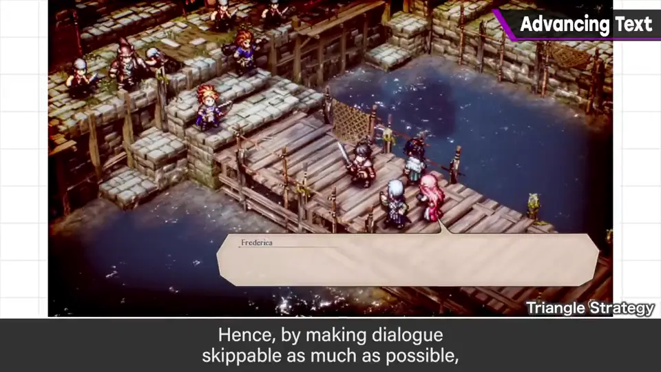
5. 抛出一个问题 2:25
他注意到大多数海外作品默认关闭字幕，所以这个观念在海外可能理解不同。
但他想借这个机会提个问，哪怕多少提高一些意识：推进缓慢的场景，在今天真的合适吗？
自测题
1. 樱井用什么比喻说明文字和过场推进的差别？
翻书和看电影的差别。 0:49
2. 他推荐了哪两种做法？
让台词可逐句跳过/快速推进；或让玩家边玩边听对话。 1:18
3. 为什么说快速消费已是现代文化？
影像内容看不完，倍速播放普及，大家想用最少时间享受最多。 1:58